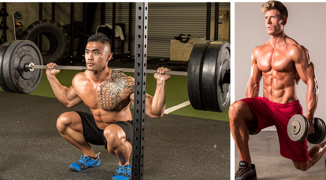
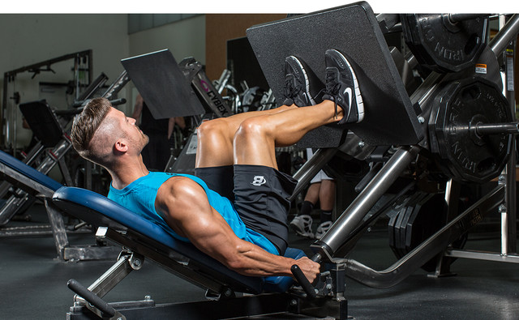
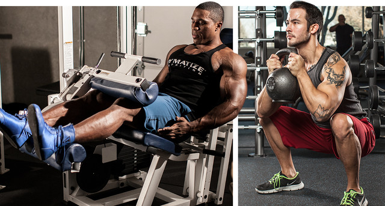
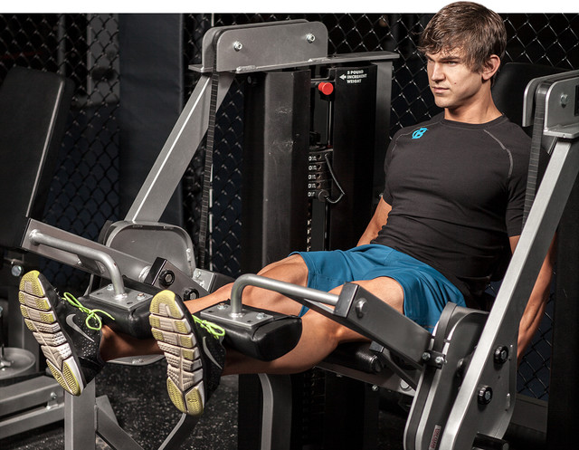
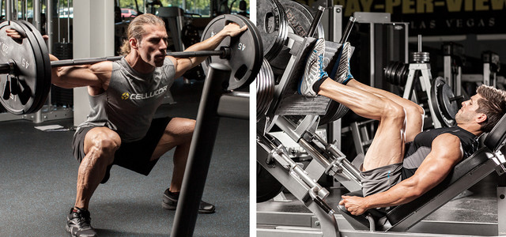

1 More Overall Leg MassAltering your foot placement on the leg press allows you to recruit leg musculature in slightly different ways. Putting your feet up higher on the sled shifts some of the emphasis from the quads to the hams and glutes because a greater degree of hip flexion/extension is taking place. Also, don't shortchange the depth of your knee bend—which should reach 90 degrees—by going too heavy—that also limits glute and hamstrings activation. Unless you're following a pre-exhaust routine, save the single-joint movements for last . |
 |
2 Greater Leg DefinitionSimply doing more work with light weight for high reps isn't enough to get you lean. To keep your metabolism high, you still need that stimulus for building and keeping muscle size. That will help boost excess post-exercise oxygen consumption (EPOC), which roughly translates to the number of calories you burn after your workout is over |
 |
3 Starting StrongLearning to squat can be a challenge, which is why the simple goblet version is a great place to start. The idea here is to learn and practice movement patterns before loading them with heavier weights or graduating to more complex moves. |
 |
4 Emphasize Your QuadsBecause multijoint leg movements work your legs from top to bottom, it's impossible to completely isolate one area over another. However, you can emphasize one area over another. In this case, we're trying to maximize the range of motion of the knee joint while limiting the range of motion at the hip joint. One way to do this is by changing up your foot position on machine exercises. |
 |
5 Emphasize Your GlutesWhile you tried to minimize hip flexion/extension in the quad-focused workout, here you want to maximize it. Do that by choosing exercises and foot positions that allow the glutes to be trained through their full range of motion. Be sure to descend fairly deep in all squatting motions; otherwise, you'll limit glute activation. |
 |